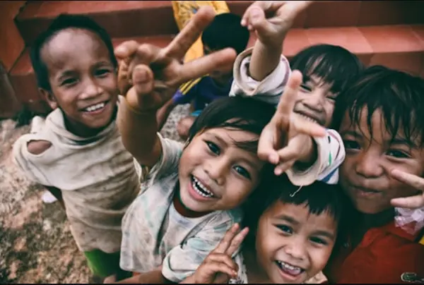
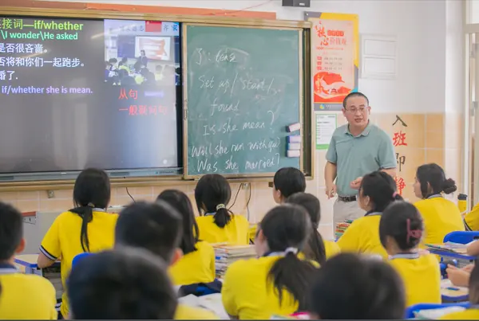
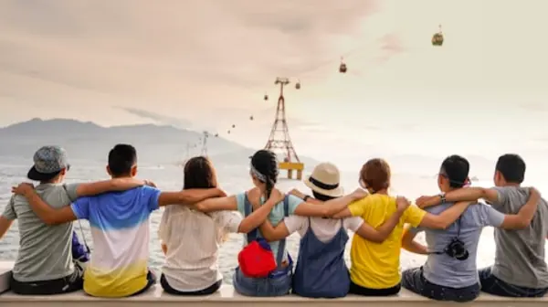

Daily Nutrition
We serve daily nutritious meals to children from low-income households to ensure they can focus on their education.
Providing daily nutrition, after-school tutoring, and life-skills workshops for local children across Limpopo.
Rudzani Community Outreach is a registered non-profit organisation (NPO) founded in 2018 in Limpopo. Our vision is to ensure every child has an equal opportunity to thrive through proper nutrition, educational support, and skill development.
Learn more about our mission and vision, explore our community programmes, or volunteer or become a sponsor today.

We serve daily nutritious meals to children from low-income households to ensure they can focus on their education.

Free academic tutoring in foundational subjects like Mathematics, English, and Science for primary and high school learners.

Practical workshops teaching digital literacy, personal growth, and leadership skills for teenagers.
Our volunteers give learners in Tshisaulu the support they need to study, grow and succeed. Press play to see how learning support looks in practice.
Explore all programmes